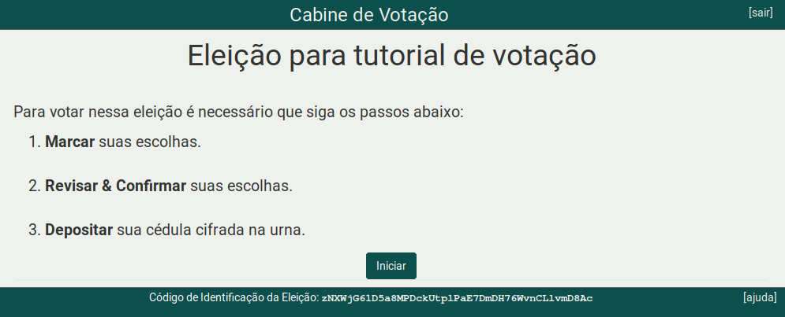
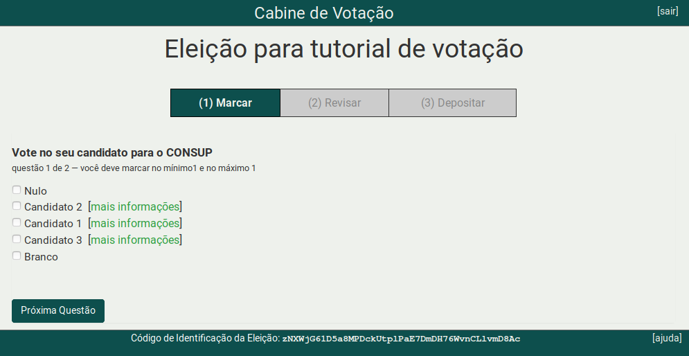
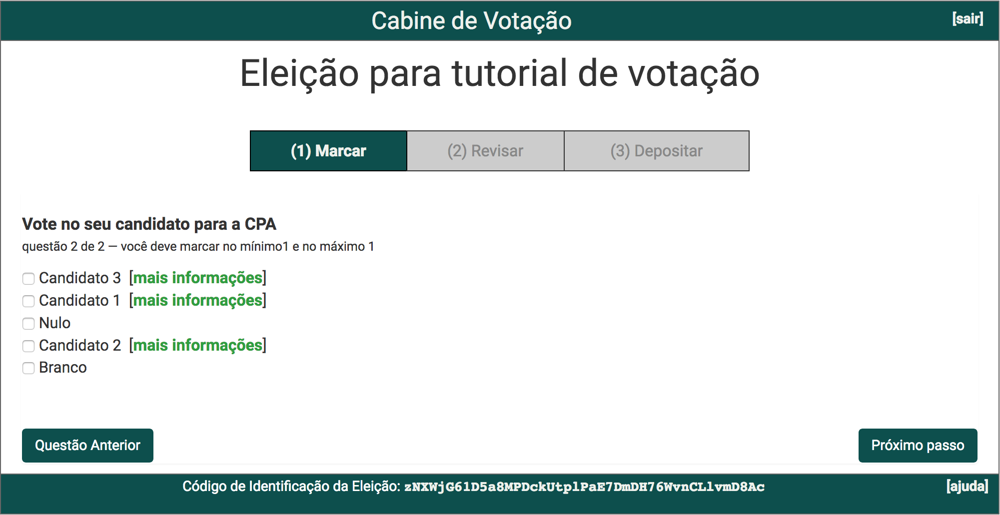
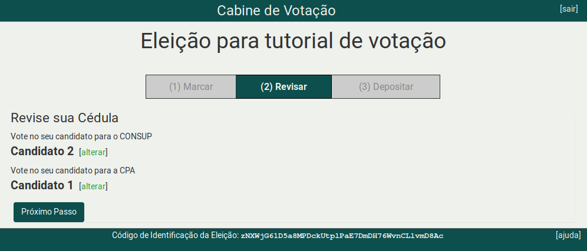
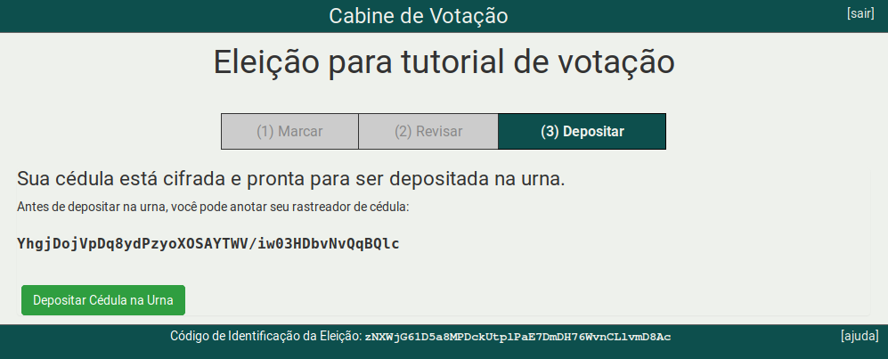

Como votar usando o sistema de votação eletrônica
-
Para votar use as informações que recebeu por email (id do eleitor, senha e link da eleição).

-
A página inicial contém as instruções, clique no botão Iniciar 
-
Escolha somente um dos candidatos e se a eleição possuir mais de uma questão, então clique no botão Próxima Questão.

-
Para a última questão escolha somente um dos candidatos e clique no botão Próximo passo.

-
Nesta etapa é possível revisar as escolhas de voto e caso esteja tudo correto clique no botão Próximo passo.
- Se desejar alterar o voto, basta clicar no link alterar e a tela retornará para a cédula de votação com todos os candidatos disponíveis para nova escolha.

-
Ao depositar a cédula na urna eletrônica o voto será contabilizado para a referida eleição. 
-
Clique no botão Confirmar para depositar sua cédula na urna. Se não deseja depositar a cédula, clique no botão cancelar.

-
Parabéns, seu voto foi depositado com sucesso.

Atenção: O sistema Helios permite que você deposite cédulas na urna quantas vezes desejar. Porém, somente a última cédula depositada é a que será contabilizada na apuração da urna. Todas as cédulas anteriores serão descartadas.